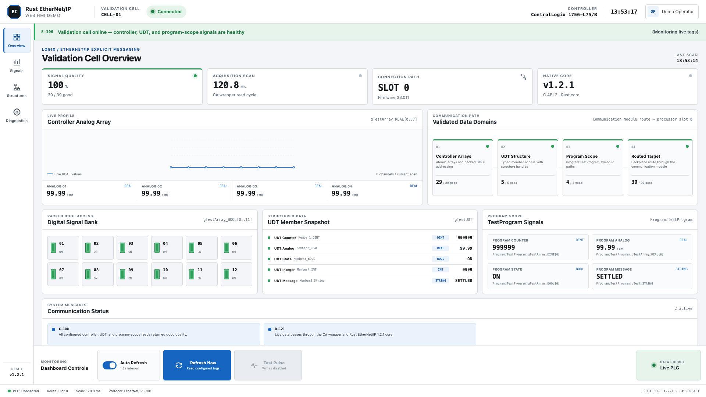

Single-tag I/O
Typed reads and writes for BOOL, integer, floating-point, STRING, arrays, and symbolic bit paths.
Open source · CompactLogix · ControlLogix
A modern, cross-platform EtherNet/IP/CIP explicit-messaging SDK for CompactLogix and ControlLogix tag access, built for native performance, memory safety, and async I/O — with first-class APIs for Rust, .NET/C#, Python, C, and C++.
What that means: the driver originates request/response messages to read, write, batch, and discover Logix tags without an OPC server. It is not a cyclic implicit-I/O Scanner or Adapter.
Runnable C# + React example
Start in simulation, then connect the same application to a CompactLogix or routed ControlLogix. The walkthrough includes the exact Studio 5000 tags, PC prerequisites, build commands, architecture, and safe read-only defaults.

Where the library fits
Build the interface your users need. This project owns the protocol, routing, and controller details between your application code and CompactLogix or ControlLogix tags.
Desktop HMI, web backend, MES service, collector, historian, or edge gateway.
Write normal application code in Rust, C#, Python, C, or C++.
An explicit-messaging client driver with thin language bindings over one memory-safe Rust protocol core.
The layer this project providesTCP sessions and request/response tag messaging, with symbolic paths, chassis routing, batching, fragmentation, and errors.
Read, write, discover, batch, and monitor CompactLogix or ControlLogix tags.
Protocol scope: this project is an explicit-message client/originator for Logix data access. It does not implement cyclic Class 1 implicit I/O, an I/O Scanner, or an I/O Adapter. A TCP EtherNet/IP session is also distinct from a connected CIP Class 3 connection.
Web application note: the PLC connection belongs in your backend or edge service; browser JavaScript should call that service rather than opening an industrial protocol connection directly.
Rust core capabilities
One protocol core handles the controller work. Choose a language wrapper for your application without reimplementing EtherNet/IP.
Typed reads and writes for BOOL, integer, floating-point, STRING, arrays, and symbolic bit paths.
Read or write many independent tags with packet-size-aware grouping and per-tag results.
Use TagName or Program:Main.TagName with the same read/write APIs.
Enumerate controller tags and inspect type metadata; Rust also exposes program-scoped enumeration.
Read whole structures, access nested symbolic paths, and write known members without rebuilding a UDT.
Handle-aware text access for standard STRING and custom DATA sizes, including fragmented large transfers.
Route through a 1756 Ethernet module and backplane slot, including ordered multi-hop paths.
Subscriptions, tag-group polling, health checks, operation metrics, latency, and native error detail.
Wrapper surfaces intentionally differ today. Use the language guides below to confirm exact API availability for each stack.
Choose your stack
Every binding runs through the same Rust implementation, so protocol fixes and controller behavior stay consistent.
Async, typed access with full control over routes, batches, UDTs, diagnostics, and subscriptions.
rust-ethernet-ip = "1.2.1"
Typed, idiomatic APIs for HMIs, MES integrations, Windows services, and ASP.NET applications.
dotnet add package RustEtherNetIp
PLC data for collectors, analytics, historians, APIs, pandas workflows, and edge services.
pip install rust-ethernet-ip==1.2.1
A checked-in C header and compact RAII wrapper for native, Qt, and industrial PC applications.
#include "rust_ethernet_ip.h"
use rust_ethernet_ip::{EipClient, PlcValue};
let mut plc = EipClient::connect("192.168.1.10:44818").await?;
let speed = plc.read_tag("Program:Main.Speed").await?;
plc.write_tag("Program:Main.Setpoint", PlcValue::Dint(1500)).await?;using var plc = new EtherNetIpClient();
plc.Connect("192.168.1.10:44818");
var speed = plc.ReadDint("Program:Main.Speed");
plc.WriteDint("Program:Main.Setpoint", 1500);from rust_ethernet_ip import EtherNetIpClient
with EtherNetIpClient("192.168.1.10:44818") as plc:
speed = plc.read_tag("Program:Main.Speed")
plc.write_tag("Program:Main.Setpoint", 1500)auto result = EipClient::connect("192.168.1.10:44818");
if (!result) return 1;
EipClient plc = std::move(result.value);
auto speed = plc.read_dint("Program:Main.Speed");
plc.write_dint("Program:Main.Setpoint", 1500);Start in minutes
Direct CompactLogix or routed ControlLogix, controller tags or program tags—the same symbolic paths work across every supported language.
Installation guide →Evidence, not assumptions
The library targets CompactLogix and ControlLogix explicit tag access, including integrated Ethernet and chassis routing. Compatibility claims are tied to an exact processor, firmware, topology, release, and language binding—not only a family name.
Built for industrial software
Rust combines native performance with memory and thread safety for byte-level packet parsing, asynchronous network I/O, sessions, and long-running industrial services.
Industrial teams can keep familiar C#, Python, C, or C++ application code while one tested Rust core owns the protocol behavior and fixes.
Program tags, arrays, packed BOOLs, built-in and custom strings, nested UDTs, and routed chassis access.
Simulator tests, cross-language contracts, release gates, and real-hardware records live beside the code.
Support open industrial software
Sponsorship helps fund real-hardware validation, controller access, cross-platform packaging, and the time required to keep every language binding documented and tested.
Sponsor on GitHub ♡Open source · MIT
Read the docs, inspect the protocol core, or bring another processor and firmware into the compatibility matrix.